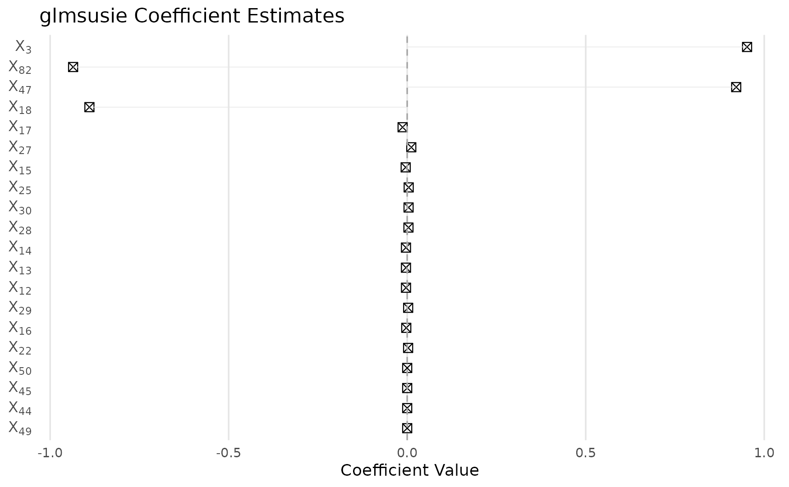
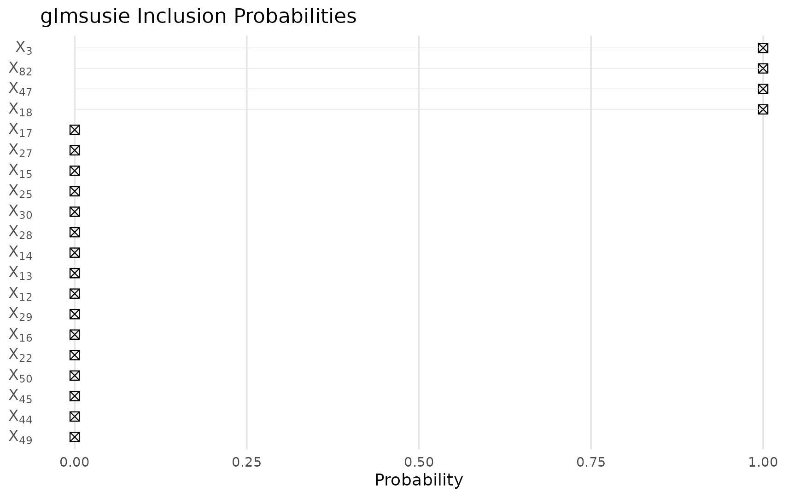
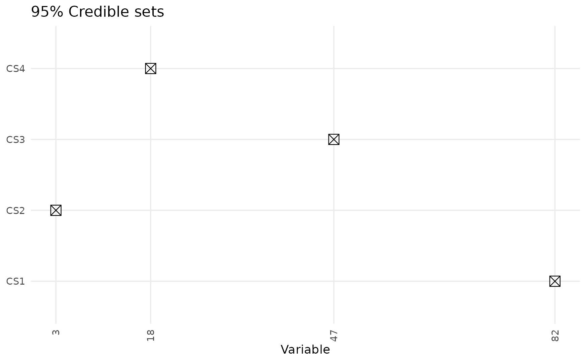

Introduction
The glmsusie package implements the generalized sum of single effects (gSuSiE) model, which represents the overall effect as a sum of a small number of single-effect components. This approach extends variable selection to various regression models including Cox proportional hazards regression for survival analysis.
In this vignette, we demonstrate gSuSiE’s performance with survival outcomes and highly correlated predictors:
- Simulate a block-wise correlation structure with 100 predictors
- Apply gSuSiE to perform variable selection via
glmsusie()with Cox regression - Visualize coefficient estimates, posterior inclusion probabilities (PIPs), and credible sets (CSs)
- Evaluate predictive performance for survival analysis
Simulate data
We generate n=1000 observations and p=100 predictors with block-wise correlation. Every 10 consecutive variables are highly correlated (\rho=0.95) within each block, while blocks are independent. Only 4 variables have nonzero effects on the hazard, located in different correlation blocks.
set.seed(42)
n <- 1000 # sample size
p <- 100 # number of predictors
L <- 10 # number of single-effect components
block_size <- 10
n_blocks <- p / block_size
rho <- 0.95 # within-block correlation
# Create block-wise correlation matrix
Sigma <- matrix(0, p, p)
for (b in 1:n_blocks) {
block_idx <- ((b-1)*block_size + 1):(b*block_size)
# Within-block correlation matrix
block_corr <- matrix(rho, block_size, block_size)
diag(block_corr) <- 1
Sigma[block_idx, block_idx] <- block_corr
}
# Generate correlated predictors
X <- MASS::mvrnorm(n, mu = rep(0, p), Sigma = Sigma)
# True sparse coefficients (one per block, spread across different blocks)
theta_true <- rep(0, p)
theta_true[c(3, 18, 47, 82)] <- c(1, -1, 1, -1)
# Generate survival data
library(survival)
linear_pred <- drop(X %*% theta_true)
hazard_ratio <- exp(linear_pred)
# Generate survival times from exponential distribution
lambda_baseline <- 0.1
survival_times <- rexp(n, rate = lambda_baseline * hazard_ratio)
# Generate censoring times (administrative censoring)
censor_times <- runif(n, min = 5, max = 15)
# Observed times and event indicators
observed_times <- pmin(survival_times, censor_times)
event_indicator <- as.numeric(survival_times <= censor_times)
# Create survival object
y <- Surv(observed_times, event_indicator)
cat("True nonzero coefficients at positions:", which(theta_true != 0), "\n")
## True nonzero coefficients at positions: 3 18 47 82
cat("True coefficient values:", theta_true[theta_true != 0], "\n")
## True coefficient values: 1 -1 1 -1
cat("Event rate:", mean(event_indicator), "\n")
## Event rate: 0.608
cat("Median follow-up time:", median(observed_times), "\n")
## Median follow-up time: 4.682838Fit gSuSiE model
We allow up to L=10 single effects and use the Cox family for survival regression. The method is robust to larger L values with minimal overfitting risk.
# Load glmsusie library
library(glmsusie)
# Model fitting
fit <- glmsusie(
X = X,
y = y,
L = L,
family = cox()
)
summary(fit)
##
## Call:
## glmsusie(X = X, y = y, L = L, family = cox())
##
## Family: cox
##
## Coefficients: (sorted by PIP)
## Estimate PIP
## X47 0.901898999 1.0000
## X82 -0.852089479 1.0000
## X18 -0.874196084 1.0000
## X3 0.810845532 1.0000
## X7 0.064899968 0.3493
## X9 0.053064353 0.2864
## X2 0.019897998 0.1139
## X5 0.008076569 0.0493
## X1 0.007753359 0.0479
## X4 0.007636828 0.0464
## ... (90 more coefficients not shown)
##
## 95% Confidence Sets:
## Set Coverage
## cs1 {82} 1.0000
## cs2 {3} 1.0000
## cs3 {47} 1.0000
## cs4 {18} 1.0000
## cs5 {1, 2, 3, 4, 5, 6, 7, 9} 0.9517
##
## Model converged after 3 iterations.
## Computation time: 90.57 seconds.Results
Coefficient estimates
The method successfully identifies the true signal locations despite high correlation within blocks:
plot(fit, which = "coefficients")
Posterior inclusion probabilities
Shows the probability that each variable is included in any single-effect component:
plot(fit, which = "probabilities")
95% credible sets
Each credible set contains variables where at least one is likely active with 95% confidence. Note how the method handles correlated variables within blocks:
plot(fit, which = "sets")
Credible sets summary
# Summary of credible sets
cs_sets <- fit$cs$sets
if (length(cs_sets) > 0) {
cat("Number of credible sets:", length(cs_sets), "\n")
for (i in seq_along(cs_sets)) {
cat("CS", i, "contains variables:", cs_sets[[i]], "\n")
}
# Check coverage of true variables
true_vars <- which(theta_true != 0)
covered_vars <- intersect(unlist(cs_sets), true_vars)
cat("\nTrue variables covered by credible sets:", covered_vars, "\n")
} else {
cat("No credible sets identified\n")
}
## Number of credible sets: 5
## CS 1 contains variables: 82
## CS 2 contains variables: 3
## CS 3 contains variables: 47
## CS 4 contains variables: 18
## CS 5 contains variables: 1 2 3 4 5 6 7 9
##
## True variables covered by credible sets: 82 3 47 18Coefficient comparison
Compare estimated coefficients with true values:
# Extract coefficients
coef_est <- coef(fit)
comparison <- data.frame(
Variable = 1:p,
True_Coef = theta_true,
Estimated_Coef = coef_est,
PIP = fit$pip
)
# Show results for true active variables
active_comparison <- comparison[theta_true != 0, ]
print(active_comparison)
## Variable True_Coef Estimated_Coef PIP
## X3 3 1 0.8108455 0.9999920
## X18 18 -1 -0.8741961 0.9999999
## X47 47 1 0.9018990 1.0000000
## X82 82 -1 -0.8520895 1.0000000Conclusion
This example demonstrates that gSuSiE effectively handles Cox proportional hazards regression with highly correlated predictors. The method identifies relevant variables even when they are embedded within correlation blocks, providing both point estimates and uncertainty quantification through credible sets. The Cox family implementation successfully recovers the sparse signal structure in survival data while properly handling censoring and the semi-parametric nature of the Cox model.